The terminology around marginal effects is very confusing (to me, at least). The term is used inconsistently in the statistical literature and across fields. This vignette defines the terms used for different quantities in the context of this package .
TLDR:
In scientific practice, the “Marginal Effect” falls in the same toolbox as the “Contrast in EMMs.” Both try to answer a counterfactual question: What would happen to \(y\) if \(x\) were different? They allow us to model the “effect” of a change/difference in the regressor \(x\) on the response \(y\).1
A “marginal effect” is defined as:
A partial derivative of the regression equation with respect to a regressor of interest.
Put differently, the marginal effect measures the association between a change in a regressor \(x\), and a change in the response \(y\). Put differently, differently, the marginal effect is the slope of the prediction function, measured at a specific value of the regressor \(x\).
Consider this quadratic function:
\[y = -x^2\]
From the definition above, we know that the marginal effect is the partial derivative of \(y\) with respect to \(x\):
\[\frac{\partial y}{\partial x} = -2x\]
To get intuition about how to interpret this quantity, consider the “true” response of \(y\) to \(x\). It looks like this:

When \(x\) increases, \(y\) starts to increase. But then, as \(x\) increases further, \(y\) creeps back down in negative territory.
In practice, \(y\) is generated with some error, so we won’t know exactly what the response function is, but we can estimate it. For example, here we simulate some data and estimate a linear regression model:
N <- 1e5
x <- runif(N, -4, 4)
e <- rnorm(N)
y <- -x^2 + e
dat <- data.frame(y, x)
mod <- lm(y ~ x + I(x^2))We can then use the predict function to plot the “estimated mean” or the “predicted” \(y\), for different values of \(x\):
nd <- data.frame(x = seq(-4, 4, .01))
nd$predicted_response <- predict(mod, newdata = nd)
ggplot(nd, aes(x, predicted_response)) +
geom_line() +
labs(y = "Predicted response") +
xlim(c(-4, 4)) +
ylim(c(-7, 0.5))
A marginal effect is the slope of this response function at a certain value of \(x\). The next graph adds three tangent lines, highlighting the slopes of the response function for three values of \(x\):

The slopes of these tangents tell us three things:
The marginal effect is an interesting quantity, because our scientific questions are often expressed in terms of changes, and not just levels: If \(x\) increases, does \(y\) increase, stay unchanged, or decrease? The answer to this question is a marginal effect.
Marginal effects have several drawbacks, but I will only mention two. First, since they are derivatives, they are only properly defined for continuous variables. To interpret the effect of categorical variables, we turn to contrasts between Estimated Marginal Means (see the next section).
Second, marginal effects can be quite difficult to compute manually, especially when the regression function is non-linear, or includes transformations like polynomials. Who wants to stop their interactive data analysis to take derivatives by hand?! And how do we compute the standard error of the derivative? modelsummary tries to make this process a bit easier by using automatic differentiation to compute marginal effects and standard errors.
For example, to calculate the marginal effect of \(x\) on \(y\) pour three “typical” values of \(x\), we call:
library(marginaleffects)
marginaleffects(mod, newdata = typical(x = c(-2, 0, 2)))
#> rowid type term dydx std.error predicted_response x
#> 1 1 response x 4.00593550 0.002986212 -4.00158265 -2
#> 2 2 response x 0.00171949 0.001370693 0.00627255 0
#> 3 3 response x -4.00249652 0.002983356 -3.99430427 2These numerical results are very close to the analytical truth:
\[\begin{align*} \partial y/\partial x = -2x\\ \partial y/\partial x = 4, && \mbox{for x=-2}\\ \partial y/\partial x = 0, && \mbox{for x=0}\\ \partial y/\partial x = -4, && \mbox{for x=2} \end{align*}\]
Instead of looking at the marginal effects for one value of \(x\) after the other, we can plot it for a whole range of values of \(x\), using the plot_cme function:

Again, the conclusion is the same. When \(x<0\), an increase in \(x\) is associated with an increase in \(y\). When \(x=0\), the marginal effect is equal to 0. When \(x>0\), an increase in \(x\) is associated with a decrease in \(y\).
A concept which often gets confused with marginal effects is that of “Estimated Marginal Means.”
This differs from “Fitted Values” (a.k.a. “Predictions”) because the combination of regressor values being consider do not
By default, the marginaleffects function returns predicted/estimated responses for each of the observations in the dataset:
mod <- lm(mpg ~ hp + factor(cyl), data = mtcars)
mfx <- marginaleffects(mod)
head(mfx)
#> rowid type term dydx std.error predicted_response mpg hp cyl
#> 1 1 response hp -0.02403883 0.01540789 20.03819 21.0 110 6
#> 2 2 response hp -0.02403883 0.01540789 20.03819 21.0 110 6
#> 3 3 response hp -0.02403883 0.01540790 26.41451 22.8 93 4
#> 4 4 response hp -0.02403883 0.01540789 20.03819 21.4 110 6
#> 5 5 response hp -0.02403883 0.01540745 15.92247 18.7 175 8
#> 6 6 response hp -0.02403883 0.01540789 20.15839 18.1 105 6We can also request these responses for specific values of the regressors, using the typical function, in the newdata argument. By default, typical will set any variable which is not explicitly specify to its mean value. For example,
This gives us 3 “typical observations” – or “margins” – at which we can do prediction. Using the marginaleffects function to extract those predictions gives us:
marginaleffects(mod, newdata = typical(cyl = c(4, 6, 8)))
#> rowid type term dydx std.error predicted_response hp cyl
#> 1 1 response hp -0.02403883 0.0154079 25.12392 146.6875 4
#> 2 2 response hp -0.02403883 0.0154079 19.15627 146.6875 6
#> 3 3 response hp -0.02403883 0.0154079 16.60307 146.6875 8The emmeans package refers to the set of observations that we just used to compute predicted values as a “reference grid,” but the idea is the same. Indeed, our predicted_response values (25.1, 19.2, 16.6) are exactly identical to the EMMs computed by the emmeans package:
mod <- lm(log(conc) ~ source + factor(percent), data = pigs)
mod <- emmeans(pigs.rg, "source")
pigs.lm1 <- lm(log(conc) ~ source + factor(percent), data = pigs)
pigs.rg <- ref_grid(pigs.lm1)
pigs.emm.s <- emmeans(pigs.rg, "source")
marginaleffects(mod, newdata = typical(source = c("fish", "soy", "skim"), model = mod),
prediction_type = "response")The term “effect” is itself very tricky. I actually don’t like it much in this context. To be clear, this vignette does not use the word “effect” to imply “causality”.↩︎